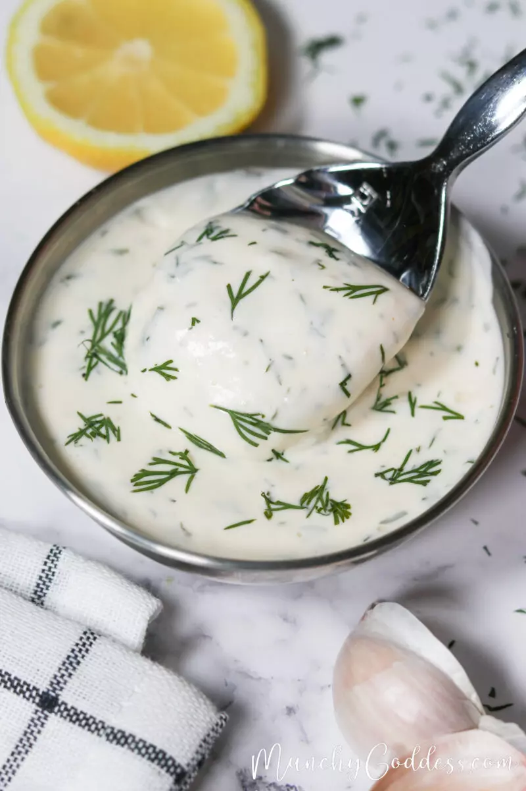

Dill Aioli

Description
This dill aioli makes a flavourful condiment that goes great with salmon, chicken, potatoes, burgers or a dipping sauce for fries. It's a simple recipe consisting of four ingrediants and takes less than five minutes to make.
Ingredients
- 1/3 cup mayo
- 1 tablespoon lemon juice
- 1 clove garlic
- 3 tablespoons fresh dill weed or 1 tablespoon dried dill
Steps
- Start by chopping the dill, mincing the garlic and juicing the lemon.
- In a small bowl, add the mayo, lemon juice, dill and garlic.
- Mix together until well blended. Cover and place in fridge to chill for 15 minutes or more so that the flavors can blend.